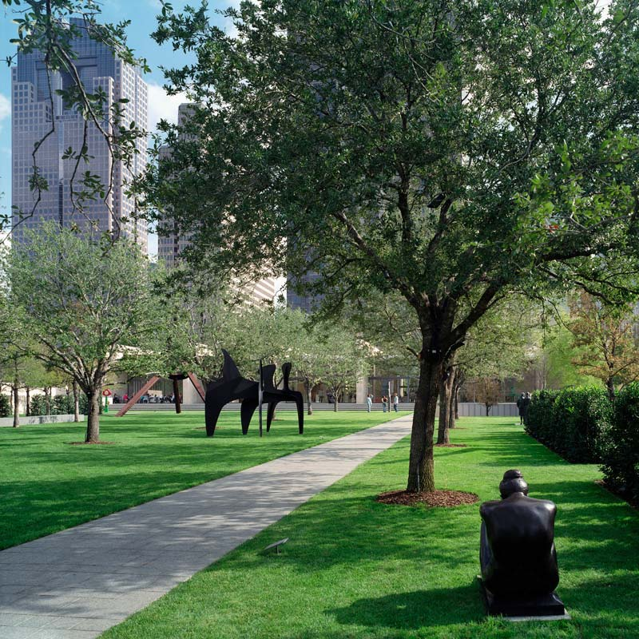

HOTEL & TRAVEL FAQ
6.2.2018
Dallas, Texas
HOTEL
We’ve blocked off rooms at the Cambria hotel at 1907 Elm Street in the Dallas Arts District.
The Cambria is a beautiful, modern hotel in a historic Dallas building about ½ a mile from the wedding venue - At the Cambria, we will be providing a hospitality suite for all wedding guests. It will be available for hanging out & catching up with friends and family from Friday afternoon until Sunday morning. It will also be stocked with snacks and drinks. Lastly, we plan on hanging out at the hotel bar Saturday night after the wedding.
We encourage all who are able to join the fun and stay at the Cambria!
To Book
You can book a room for with 1 King sized bed or 2 Queen sized beds for $135 a night. The price includes complimentary wifi and access to the fitness center.
You can book rooms for Friday and/or Saturday night online here:
Schwartz/Sarcone-Roach Hotel Block
If you plan on arriving early and/or extending your stay, or if you have special requests (ex: a wheelchair accessible room) please call to book: Make sure you tell them you’re with the Schwartz/Sarcone-Roach wedding block.
Rooms must be booked by May 11th, 2018.
Travel
Do I need to rent a car?
No! Dallas has become much more public transportation friendly, particularly in the downtown Arts District where the events of the wedding, and our hotel, is located. Its very easy to fill in any extra trips with Lyfts &/or Ubers, so we suggest saving your money.
To & From the Airports
You can get to & from the airport to the hotel in the following ways:
Public Transportation
From DFW - Take the orange line to ST. PAUL STATION station (about an hour and 15 minutes)
From Dallas Love Field - To get to the DART Bus stop at Dallas Love Field, follow the signs to the lower level for Ground Transportation. The bus runs every 15 minutes.
Take the LoveLine 524 bus to the green line. Take the green line to ST. PAUL STATION (about 35 minutes)
By car (Lyft, Uber, etc.)
About 30 minutes
To the Nasher
From the Cambria
Take the M-Line Trolley from St. Paul @Federal to Olive @ Flora (about 12 minutes)
Walk: The hotel is .6 miles from the venue (about 11 minutes)
Grab an Uber: It’s about a 5 minute drive to the venue
Helpful Links
FAQ
What to do in Dallas?
If you're not the type to spend the day lounging by the hotel pool, there is a ton of other fun stuff to do during your time in Dallas!
If your wedding outfit has some room to spare: Grab a proper TexMex brunch at The Blue Goose on Lower Greenville (we recommend the Migas).
If you'd prefer some proper Texas BBQ: Take a Lyft over to Mike Anderson's on Harry Hines and get yourself a sandwich and two sides!
If you like live music with your Saturday brunch: Get an Austin-y vibe at the Truckyard!
If you're a history buff: visit the Sixth Floor Museum at Dealey Plaza.
If you want to shop like a true Dallas socialite: Head over to Neiman Marcus or any of the other shops at NorthPark Center.
For the bookish: Visit the largest family-owned book-store in the US, Half Priced Books, on Northwest Hwy. It's a favorite of Allie's and it doesn't disappoint!
For souvenirs: Visit La Mariposa on Henderson and grab yourself some beautiful textiles or a colorful, hand-embroidered Puebla dress likes the ones Allie & her grandma Hilde love
Lastly, to stock up on afterparty supplies: A visit to the comically large Spec's Wine & Spirits on Central Expressway will leave you assured that everything truly is bigger in Texas.
Have another question?
Feel free to contact us below!
Contact Us
We have created a joint email account to help us organize all of our wedding-related planning. Please feel free to email us MikeandAllieus@gmail.com or email us individually should you have any quesitons about anything at all.
Please send any mail to our apartment:
Mike Sarcone-Roach or Allie Schwartz
217 Ocean Ave.
Apt. D12
Brooklyn, NY 11225